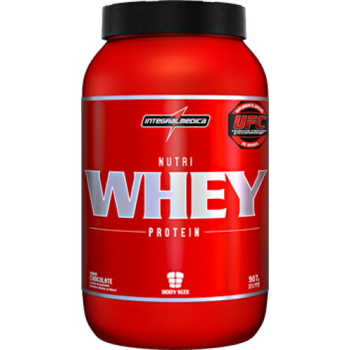

Search Academics

Suplementos
Proteinas
A função principal das proteínas é ajudar o corpo a construir massa muscular,
basicamente quando você treina seu corpo literalmente destrói os músculos e os reconstrói só
que mais fortes e com mais fibras musculares, esse processo é conhecido como hipertrofia, a
ingestão de proteínas é essencial para que esse processo da melhor maneira possível.
Whey Protein
O whey protein pode servir para complementar as necessidades diárias de proteínas,
aumentar a imunidade (imunoglobulinas), auxiliar na síntese proteica e outras funções.
Em geral a whey protein veio para auxiliar a ingestão recomendada de proteínas diárias
e minimizar o tempo perdido de uma ingestão de proteína sólida.

Caseína
Ela é utilizada principalmente para momentos do dia como antes de dormir ou ao acordar já que
a caseína é classificada como uma proteína de lenta absorção e consegue assim, impedir o
catabolismo e proporcionar a manutenção do ganho de massa muscular.
Albumina
Assim como qualquer outra proteína animal, a albumina tem sua importância na construção muscular,
e muitos não deviam subestima-lá:
• Contém aminoácidos de extrema valia quando se dá importância por um melhor funcionamento do metabolismo
(ácido glutâmico, ácido aspártico e leucina);
• Melhora na redução de gordura corporal por se tratar de uma proteína que não sofre hidrólise e tem a absorção
mais lenta, aumentando assim o tempo de processo digestivo, reduz sensação de fome auxiliando a perda de peso;
Pré Treinos
Aumentar a disposição, força e o foco durante o treino,
além de aumentar a concentração de sangue nos músculos para aumentar a hipertrofia.
Jack3d
É um suplemento pré-treino que contém substâncias vasodilatadoras e estimulantes,
capazes de aumentar o pique nos treinos e o ganho de massa muscular em menos tempo.
Ele aumenta a capacidade de levantar mais peso, fazer mais repetições e duração maior
da energia nos treinos.
NO2
Para compreender melhor para que servedo óxido nítrico, é necessário entender
como esse composto químico age no corpo e seus efeitos. Primeiramente, pode-se
citar que o óxido nítrico age diretamente no relaxamento do músculo liso da parede
dos vasos sanguíneos, dilatando-o. Por esse fator, o fluxo do sangue aumenta, diminuindo
a pressão arterial. O óxido nítrico, produzido pelas células do sistema imunológico, possui
a função de combater bactérias. Age, também, como neurotransmissor das células nervosas para as demais.
Hipercaloricos / Massa
Aumentar o ganho de massa muscular e prevenir a perde de massa magra,
além de aumentar a energia durante o dia, pois mantém o corpo abastecido por uma grande quantidade de carboidratos.
BCAA’s
O principal papel dos BCAA’s é na recuperação de lesões musculares,
lesões essas formadas durante um treino intenso de musculação.
Durante os exercícios com pesos, o corpo entra em estado catabólico
e se o organismo não tiver os nutrientes necessários para se abastecer
durante o treino, ele passa a retirar os aminoácidos presentes nos músculos
para suprir a demanda do corpo por energia. O resultado disso é a perda de massa muscular.
Creatina
Fornece energia para os músculos, repõe energia e ajuda o corpo na reconstrução dos músculos.
Maltodextrina
É um carboidrato complexo que vem do amido de milho, resultado da união da maltose com a dextrina. Sua principal função é fornecer energia ao praticante de atividade física. Como a Malto é um complexo de carboidrato, ela contém glicose, que é transformada em glicogênio pelo nosso corpo, garantindo assim, energia
Dextrose
Também conhecida como glicose, a Dextrose é um derivado da conversão enzimática do amido de milho. É um monossacarídeo e quimicamente é considerado um carboidrato simples por possuir uma estrutura molecular de tamanho reduzido, o que facilita sua digestão e rápida absorção, acarretando em poucos minutos um aumento na taxa de glicose no sangue, por esse motivo é usada como uma das principais fontes de energia pelo corpo.
Termogênicos
Termogênicos são queimadores de gordura, que basicamente, aceleram o metabolismo, aumentando a temperatura do corpo, quando isso acontece, o corpo tenta diminuir a temperatura o que acaba aumentando o aumento gasto de energia. Além de acelerar o metabolismo alguns termogênicos também tem substâncias que ajudam na redução do apetite.
lipo 6 black
Eles atacam diretamente o tecido adiposo e preservam os músculos. Uma dieta mal feita pode fazer com que o corpo perca apenas músculos e líquidos, mas nada de gordura.